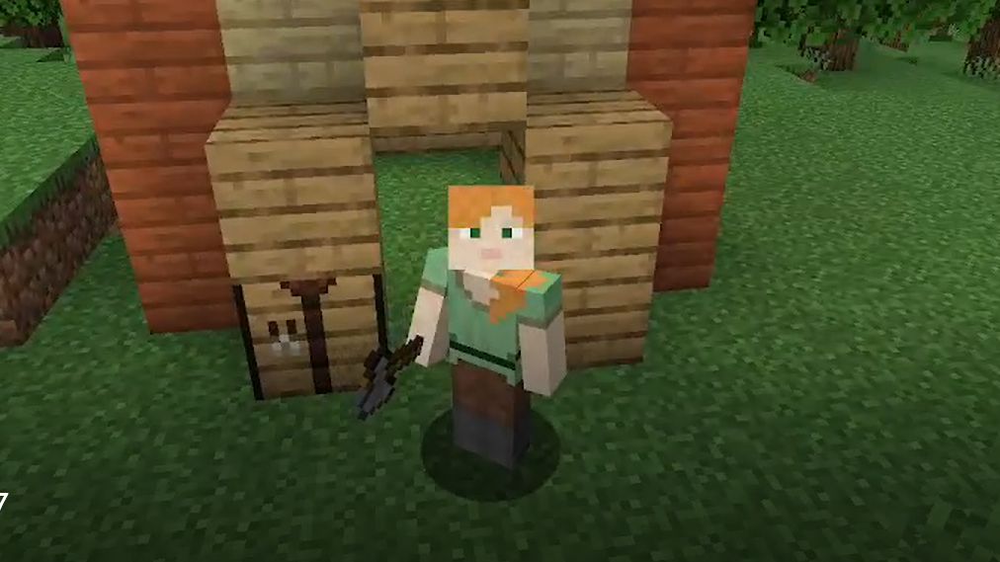

Minecraft Geschichte
Dies ist eine kurze Zusammenfassung von Minecrafts Geschichte.
- 17. Mai 2009: Veröffentlichung
- 20. Dezember 2010: Verlassen der Alphaphase
- Oktober 2011: Veröffentlichung der Mobile-Version
- 18. November 2011: Verlassen der Betaphase
- 1. Juli 2013: Einführung eines neuen launchers
- 15. August 2016: Erste Version der Virtual-Reality-Version wurde veröffentlicht
- April 2020: Raytracing-Version wurde veröffentlicht

Die einzigen Materialien welche in dem Spiel anfangs zur Verfügung standen